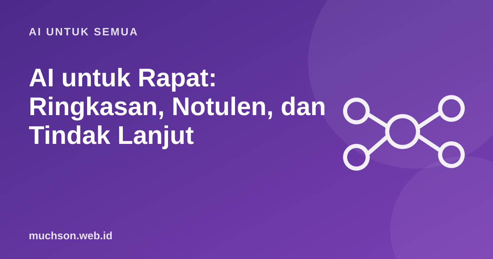

Beranda › Artikel › AI untuk Semua
AI untuk SemuaAI untuk Rapat: Ringkasan, Notulen, dan Tindak Lanjut
Rapat sering menghabiskan dua jam, lalu tidak ada yang ingat siapa harus melakukan apa. AI bisa mengubah catatan atau transkrip rapat menjadi ringkasan, keputusan, dan tindak lanjut dalam hitungan menit, asalkan Anda memberi instruksi yang jelas dan memeriksa hasilnya.

Alur yang bekerja
Template permintaan
Masalah yang sering muncul
Etika perekaman
Merekam rapat membutuhkan persetujuan peserta dan harus sesuai kebijakan organisasi serta hukum yang berlaku. Beri tahu peserta bahwa rapat direkam dan akan diringkas oleh alat bantu, terutama bila membahas hal sensitif.
Tanya jawab
Apakah AI bisa menggantikan notulis?
Bisa membuat draf cepat. Peran manusia tetap diperlukan untuk memeriksa ketepatan dan menjaga nuansa.
Bagaimana bila rapat memakai bahasa campuran?
Banyak model menangani bahasa campuran dengan baik, tetapi nama dan istilah teknis perlu diperiksa.
Apakah aman mengunggah transkrip rapat?
Tergantung kebijakan layanan dan sensitivitas isi. Untuk rapat rahasia, gunakan layanan yang disetujui organisasi.